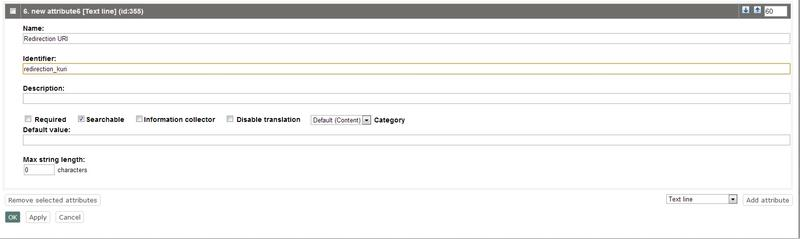
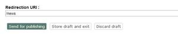
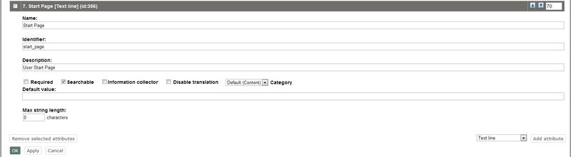
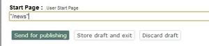

Advanced redirection after login
You can configure where to redirect a user when he/she logs in to the system. To enable this possibility for users, do the following:
- Add an attribute of the "Text line" datatype to your user class. If you have several user classes and wish to enable advanced redirection for all of them then you should add this attribute to each of your user classes (make sure you enter the same attribute identifier for all of them).
Specify the identifier of the newly added attribute in the "LoginRedirectionUriAttribute" setting located in the "[UserSettings]" section of the "settings/siteaccess/example/site.ini.append.php" configuration file (replace "example" with the actual name of your siteaccess) like this:
LoginRedirectionUriAttribute[key]=attribute_idkey
There are two keys that can be used: "user" for user class(es) or "group" for user group class(es).
attribute_id
The identifier of the newly added attribute (not ID number of the attribute).
Now you can specify the redirection URI in the text line field when creating/editing a user.
This possibility can be also enabled for user groups in the same way as for users. This means that you should add an attribute of the "Text line" datatype to your user group class(es) and specify its identifier in the "LoginRedirectionUriAttribute" setting using "group" as a key.
Example 1
Let's say that a user must be redirected to the "News" folder after log-in. The following list reveals how this could be done:
Access the "Setup" tab in the administration interface, click "Classes" on the left and select the "Users" class group. You should see the list of classes assigned to this group. Find your user class there and click the "Edit" button located in the same line of the list. You will be taken to the class edit interface. Select the "Text line" datatype from the drop-down list located in the bottom, click the "Add attribute" button and edit the newly added attribute as shown below. Click "OK" to save your changes.
Redirection URI Attribute
Specify the identifier of the newly added attribute in the "LoginRedirectionUriAttribute" setting located under the "[UserSettings]" section of an override for the "settings/site.ini" configuration file. To do this, you should add the following line:
LoginRedirectionUriAttribute[user]=redirection_uriwhere "redirection_uri" is the attribute identifier.
Access the "User accounts" tab in the administration interface, use the "Sub items" list to find the user and click the "Edit" button located in the same line of the list. You will be taken to the user edit interface. Specify "/news" in the text field called "Redirection URI" (the name of the newly added class attribute) as shown below. Click the "Send for publishing" button to save your changes and the user "John" will be always redirected to the "News" folder after log-in.
Redirection URI Field
Example 2
Let's say that you wish to redirect all users that belong to the "Guest accounts" group to the "News" folder after log-in. The following list reveals how this could be done:
Edit your user group class and add an attribute of the "Text line" datatype as shown below:
Start Page Attribute
Add the following line into the "[UserSettings]" section of an override for the "settings/site.ini" configuration file:
LoginRedirectionUriAttribute[group]=start_pagewhere "start_page" is the attribute identifier.
Edit the "Guest accounts" user group and specify "/news" in the text field called "Start page" (the name of the newly added class attribute) as shown below.
User Start Page Field
Click the "Send for publishing" button to save your changes and all the users that belong to the "Guest accounts" group will be always redirected to the "News" folder after log-in.
Important notes
If a user is a member of several groups (a child of several "User group" nodes), the system will use the redirection URI that is specified for the "main" group (main parent node). The following screenshot shows the user view interface a user that belongs to both "Guest accounts" and "Editors" user groups. The "Locations" list located under user preview allows to view and manage locations for the user object that is currently being viewed. The main location is displayed in bold, in our example).
Multiple Locations URI Redirection
Please note that the advanced redirection feature will get disabled if the redirection URI is already specified (e.g. via the "LastAccessesURI" session variable. Let's say that you have specified "/news" as the redirection URI for the user (see Example 1). If the user launches a browser and goes directly to, for instance: "http://yoursite.com/media_files" then they will not be redirected to "http://yoursite.com/news".
Svitlana Shatokhina (14/09/2010 12:10 pm)
Andrea Melo (14/11/2012 12:30 pm)
Comments